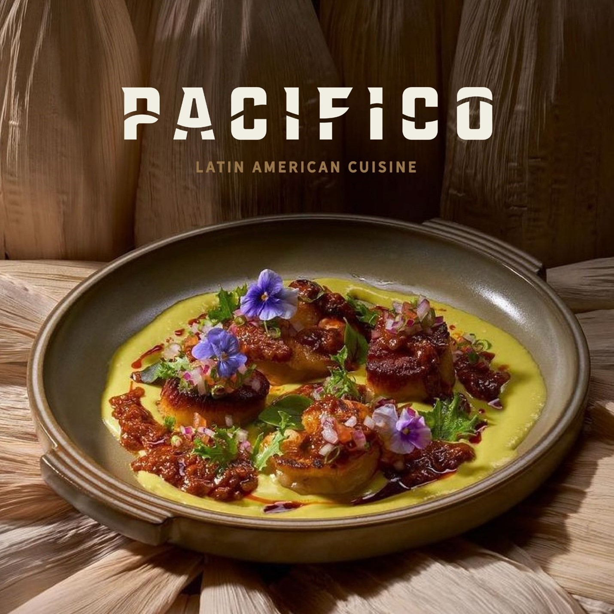
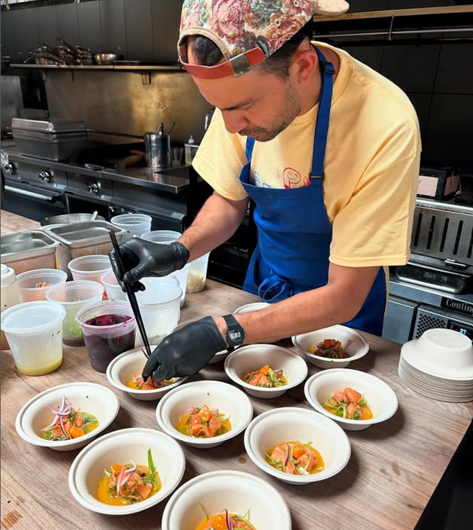

Pacifico
LATIN AMERICAN CUISINE
LATIN AMERICAN CUISINE
Born in 2023, Pacifico is making waves in the culinary world with its innovative approach to cooking. Drawing inspiration from the vibrant and rich flavors of the Colombian Pacific Coast, the restaurant blends traditional regional ingredients with globally inspired techniques and influences. Each dish tells a story of the coastal culture, celebrating the freshness of the sea, the warmth of the tropics, and the boldness of Colombia’s unique heritage, all while embracing a fusion of international flavors and contemporary culinary methods. With every bite, Pacifico transports diners on a journey, where the best of both worlds come together in a symphony of taste.


Chef Daniel’s culinary journey began in Colombia, where he grew up surrounded by the rich flavors of his homeland. He went on to study at culinary school in Peru, before gaining experience in kitchens across Miami and San Francisco. These diverse experiences have shaped his unique approach to cooking, blending Latin American authenticity with global influences. Together with his partner Laura, Chef Daniel prioritizes local and sustainable business practices. They are passionate about building a community-oriented restaurant that focuses on sustainability and connection. Currently, they operate as pop-ups, private events, and catering services in the Bay Area, sharing their creativity and flavors with a growing audience.